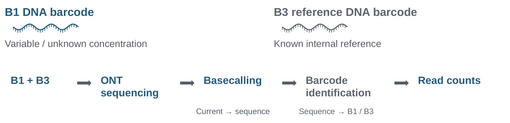

My research explores nanopore-based molecular sensing strategies for the quantitative and multiplexed detection of low-abundance disease-associated biomarkers. I am particularly interested in molecular recognition, signal generation, and quantitative measurement approaches that could contribute to earlier and more reliable disease detection.
Two independent ONT approaches and a separate solid-state nanopore experience.
01
Imperial College London · Current MSci research
Reference-Based DNA Barcode Quantification
Investigating reference-based DNA quantification using Oxford Nanopore Technologies (ONT). By comparing sequence-distinguishable DNA barcodes with an internal reference, this work explores strategies to improve the accuracy, precision, and reliability of nanopore-based concentration measurements.

Relative readout: NB1 / NB3
Adapted from Yihan Li’s editable B1/B3 project schematic (slide 9); colours and labels simplified. ONT can identify and count molecules without an internal reference. Here, B1/B3 ratios are investigated to improve quantitative reliability. Open full-size figure ↗
Imperial College London · Parallel MSci research direction
Enzyme-Mediated RNA Detection and Signal Amplification
Exploring enzyme-assisted detection of low-abundance RNA biomarkers through DNA–RNA hybridisation and Duplex DNase-mediated cleavage. This strategy investigates sequence-encoded DNA reporter generation, potential RNA recycling and signal amplification, and opportunities for multiplexed molecular detection.
PROPOSED STRATEGY
01
Target recognition
DNA probe: RNA-recognition region and sequence-encoded reporter region.
02
DNA–RNA hybrid
Complementary target RNA binds the DNA recognition region.
03
DNA cleavage
Duplex DNase acts on DNA within the hybrid. RNA is not the cleavage substrate.
04
Proposed reporter
DNA fragments may contain a reporter. Integrity remains unverified.
Potential RNA reuse Released RNA may participate in additional probe-cleavage reactions. Release and productive reuse remain unverified.
Conceptual, proposed strategy based on the project presentation (slides 19–23) and Minghui Qi’s viva (slide 26). No exact cleavage sites or molecular products are assigned.